Set the starting point
Initialize the ego vehicle's placement and state.
A complete view of driving intelligence.
DriveHierarchy separates perception, contextual integration, and future-oriented reasoning, then relates them to driving under continuous interaction. The result is a capability profile that helps explain where a model succeeds and where to intervene.
14 tasks. 1,000 questions per task.
Evaluating VLM-based autonomous driving remains difficult because driving competence is composite: a capable system must ground traffic participants and hazards, integrate context across views and time, reason about future evolution, and act appropriately under closed-loop interaction. DriveHierarchy organizes these capabilities into four ranks. It integrates multiple open-source autonomous-driving datasets into a unified open-loop benchmark and provides a closed-loop simulation platform with interactive scenario construction on a real-world road network. Experiments on 15 VLMs reveal structured but non-redundant capability variation, connect open-loop understanding to closed-loop driving, and support targeted diagnosis and benchmark-guided optimization.
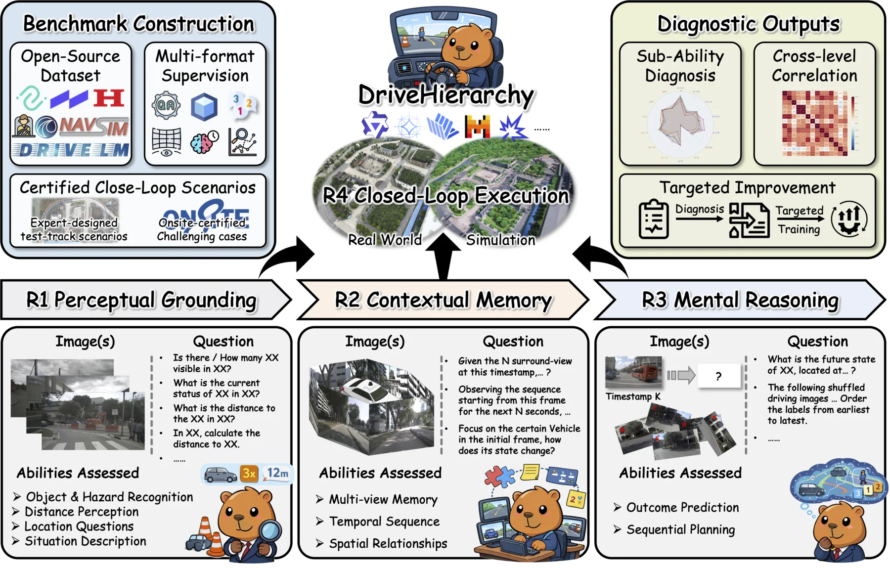
Expand figure ↗Select a rank to explore its tasks.
Take on memory and reasoning tasks.
Recognize traffic participants and hazards, estimate distances, localize referred objects, and describe the current traffic situation.
Count each vehicle once across the six synchronized views, including overlapping camera coverage.
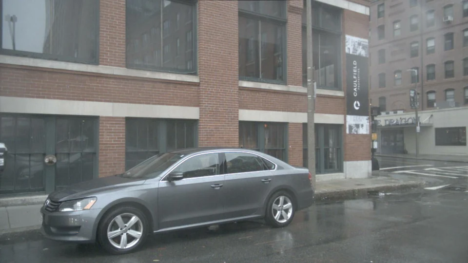
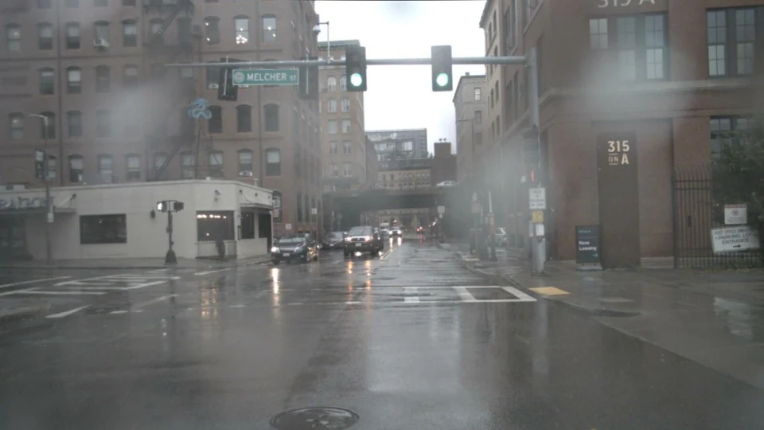
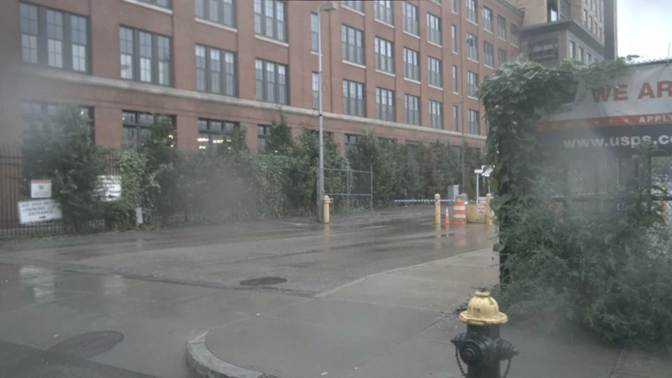
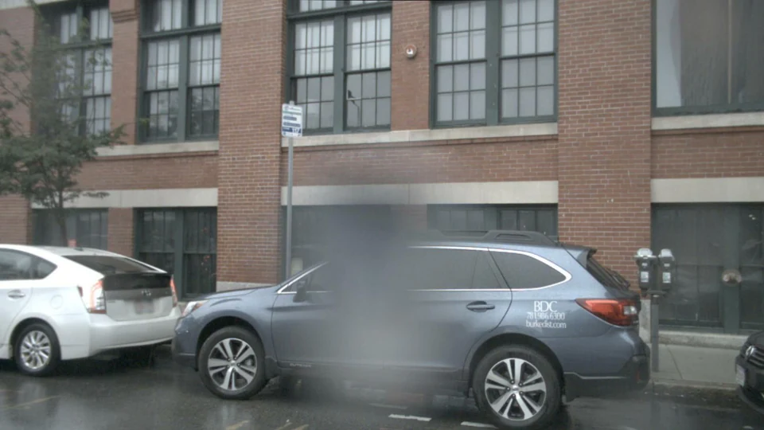
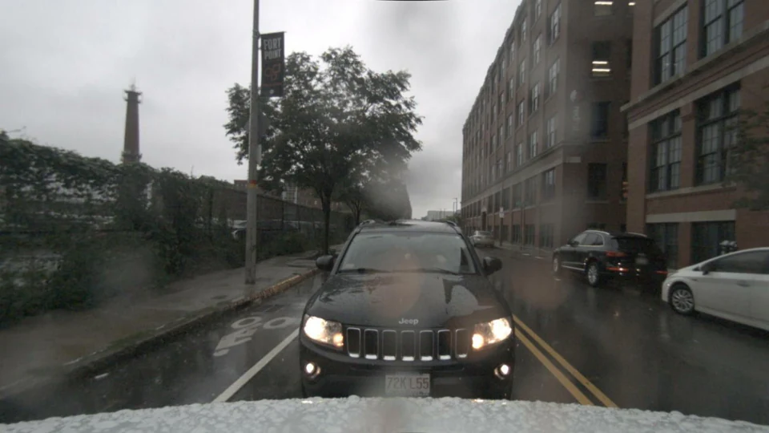
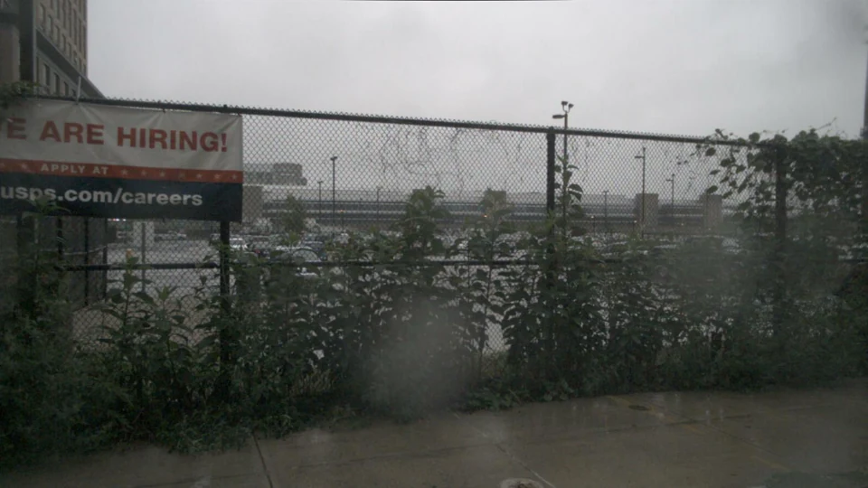
Use the arrows beneath each frame to move it earlier or later. Start with the earliest observation.
Turn a driving question into a custom scenario.
Visually configure actors, trajectories, and conditions without writing scenario scripts.
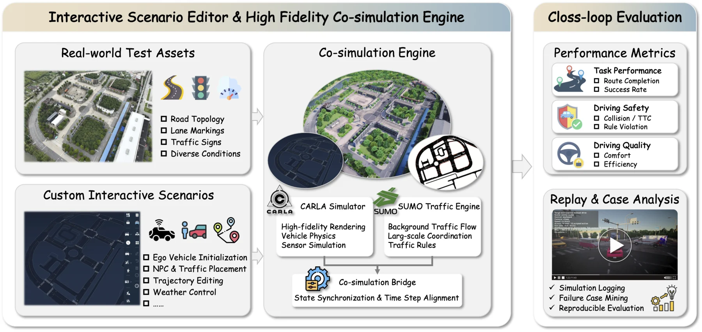
View full platform ↗Initialize the ego vehicle's placement and state.
Place vehicles, pedestrians, and other dynamic actors around the ego vehicle.
Edit actor trajectories to create merging, yielding, and crossing interactions.
Configure weather and refine the scene around your research question.
CARLA + SUMO bring your scenario to life.
Run, replay, and explore every interaction.
Build the interactions you want to investigate.
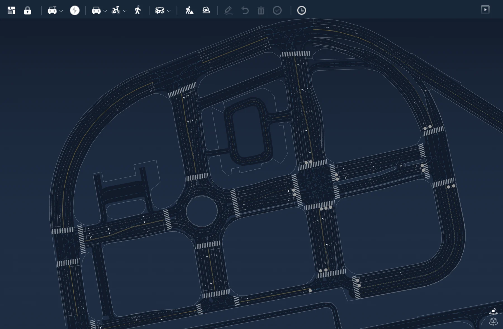
Explore the interface ↗Built on a real-world road layout.
Curated to challenge interactive execution.
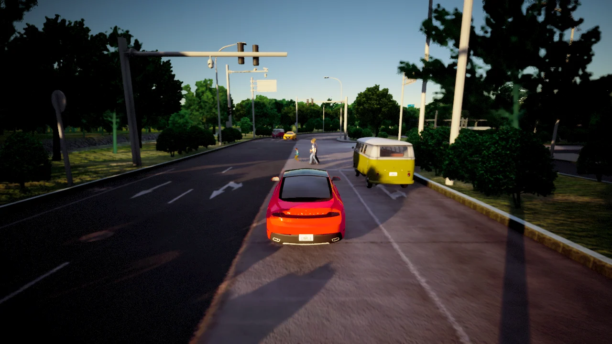
Enlarge scene ↗Detect crossing intent, decelerate in time, yield when required, and resume only after the conflict region is clear.
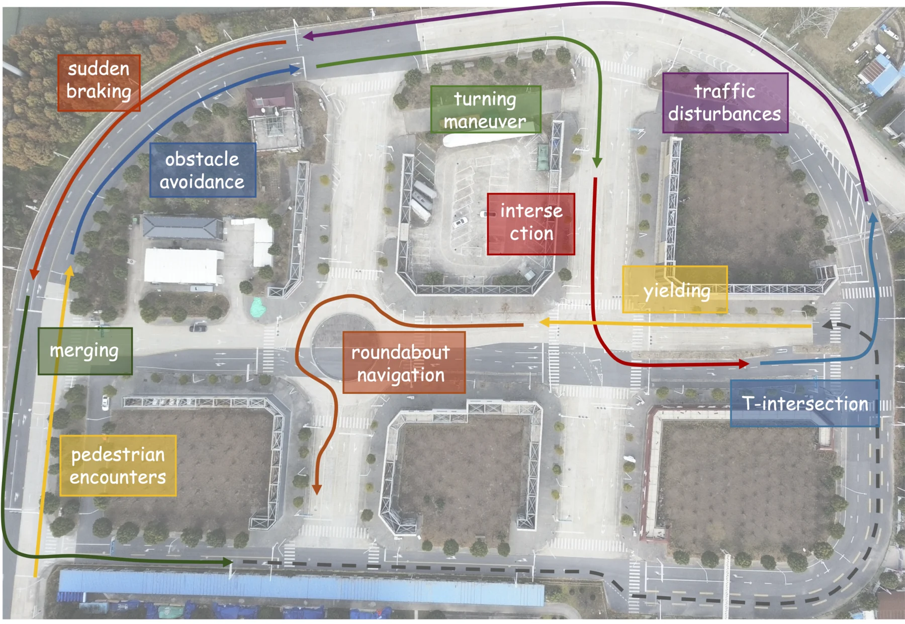
Explore the capabilities behind today’s VLMs.
From open-loop understanding to closed-loop driving.
Qwen2.5-VL 72B
R1–R3 · Open-loop scoreGemma-3-it 27B
R4 · Closed-loop score| Rank | Model | Parameters | Open-loop score ↑ | Closed-loop score ↑ |
|---|
15 models
Compare task-level strengths within a model family or across similarly sized models.
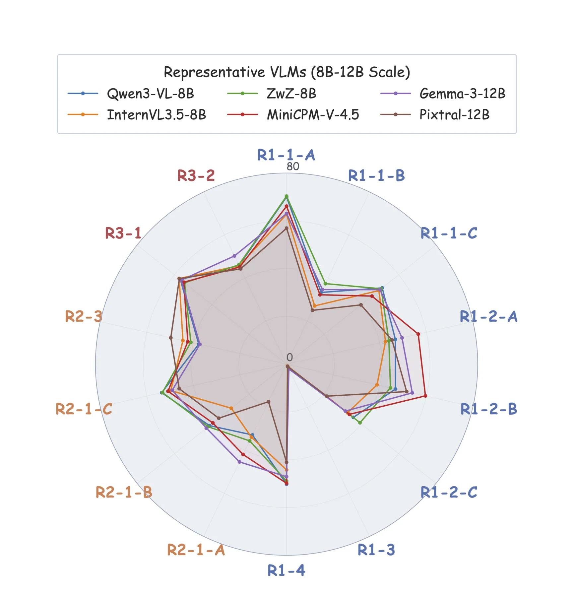
View full figure ↗Targeted capability training.
Stronger closed-loop performance.
Turn a capability profile into a training strategy.
DriveHierarchy identifies the weak capability groups. Joint fine-tuning on those open-loop tasks lifts Qwen3-VL-8B’s closed-loop score from 0.902 to 8.021.
Explore the study ↗Spearman ρ with closed-loop R4.
@inproceedings{xu2026drivehierarchy,
title = {{DriveHierarchy}: A Benchmark for Diagnosing {VLM} Driving
Capabilities from Open-Loop Understanding to Closed-Loop Execution},
author = {Xu, Chengkai and Liu, Jiaqi and Guo, Yicheng and Hang, Peng and Sun, Jian},
booktitle = {Advances in Neural Information Processing Systems},
year = {2026},
url = {https://neurips.cc/virtual/2026/loc/paris/poster/139730}
}